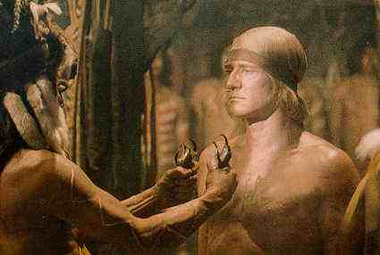

A Western is a Western is a Western Page 6 A Man Called Horse/B+, B+
Well filmed attempt at capturing the raw sense of the savage experience through Western eyes. Englishman Lord John Morgan is imbibing the American frontier through a private hunting expedition when his sudden capture by hostile Indians changes the course of his life. Richard Harris makes the most of this plum role, groveling in the
dirt and comfortably cavorting bare bottomed whenever necessary(Can you imagine, he's
going nude again almost 25 years later in Wrestling with Ernest Hemingway, currently
showing on theatrical screens.). Harris is often painfully convincing and has wonderful
support from Dame Judith Anderson, who makes the most of her moments as Harris's initial
tormentor.  Elliot Silverstein uses the wide screen vistas to grand effect.
The director moves the film along at a crisp pace despite its almost two hour running
time. The action sequences are dynamic and he maintains an authentic feel to the
film.
|